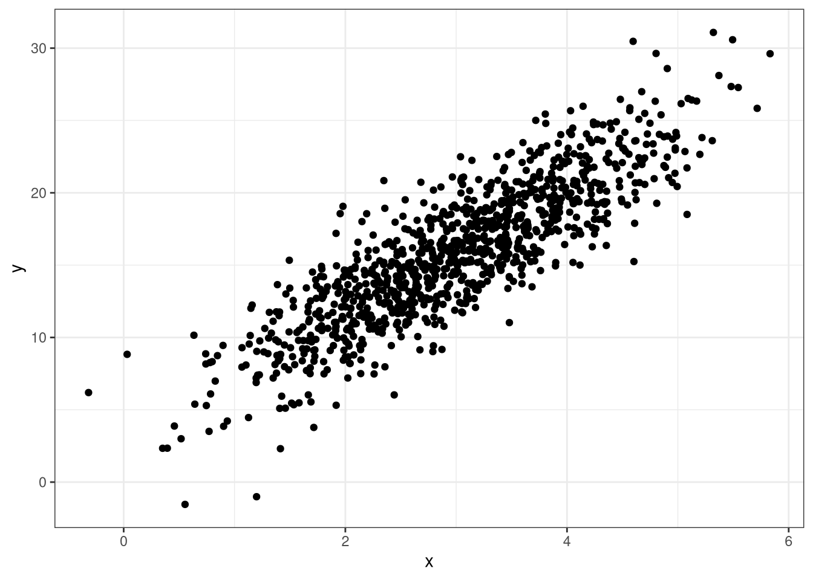
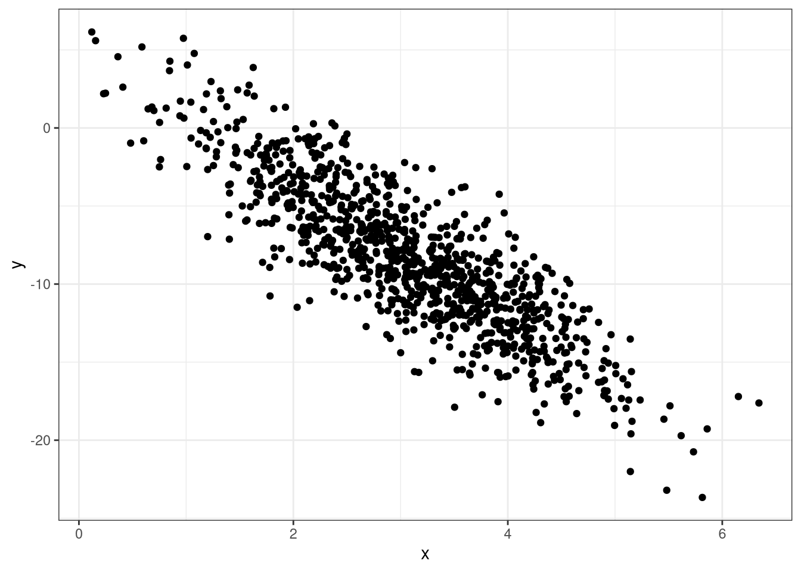

Summary statistics are used to describe the distribution of data.
Central Tendency
Central tendency is a statistical concept that refers to the central or typical value around which a set of data points tends to cluster. It is used to summarize and describe a data set by identifying a single representative value that provides insights into the data’s overall characteristics.
Variation
Variation in statistics refers to the extent to which data points in a dataset deviate or differ from a central tendency measure. Understanding variation is crucial for making informed decisions, drawing meaningful conclusions, and assessing the reliability of statistical analyses.
Minimum
The minimum (min) is the smallest value in the data.
Maximum
The maximum (max) is the largest value in the data.
Quartiles
Quartiles are three values (Q1, Q2, Q3) that divides the data into four subsets.
Q1
Q1 is the value signifying that a quarter of the data is lower than it.
Q2 - Median
Q2 is the value signifying that half of the data is below it.
The median also represents the central tendency of the data.
Q3
Q3 is the value signifying that 3 quarters of the data is below it.
Interquartile Range
\[
IQR = Q_3 - Q_1
\]
Range
\[
R = \mathrm{max} - \mathrm{min}
\]
How to identify the quartiles?
Sort the data
ID Max and Min
Find the amount of data the makes a quarter:
\(K=N/4\)
Create 4 groups using the sorted data
group by data size
If \(K\) has a decimal, the \(Kth\) value is quartile of each group.
Mean
Describe how you will find the mean of these numbers:
#> [1] 15 16 14 19 14
Mean
The mean is another measurement for central tendency.
\[
\bar X = \frac{1}{n}\sum^n_{i=1}X_i
\]
\(n\): total data points
\(X_i\): data points
\(i\): indexing data
\(\sum\): add all from first (bottom) to last (up)
Variance
The variance is a measurement on the average squared distance the data points are from the central tendency.
The standard deviation is a measurement on the average distance the data points are from the central tendency.
\[
s=\sqrt{s^2}
\]
Outliers
These are data points that seem to be highly distant from all other variables.
Numerical Statistics in R
Numerical Statistics in R
Mean
mean(DATA$VAR)
Median
median(DATA$VAR)
Standard Deviation
sd(DATA$VAR)
Variance
var(DATA$VAR)
Quartiles
quantile(DATA$VAR, probs =c(0.25, 0.5, 0.75))
Max and Min
max(DATA$VAR)min(DATA$VAR)
Summary Statistics
num_stats(DATA$VAR)
Mr. Trash Wheel
num_stats(trashwheel$PlasticBottles)
#> # A tibble: 1 × 10
#> min q25 mean median q75 max sd var iqr missing
#> <dbl> <dbl> <dbl> <dbl> <dbl> <dbl> <dbl> <dbl> <dbl> <dbl>
#> 1 0 988. 2219. 1900 2900 9830 1650. 2723984. 1912. 1
Data Visualization
Histogram
A histogram is a graphical representation of the distribution or frequency of data points in a dataset. It provides a visual way to understand the shape, central tendency, and spread of a dataset by dividing the data into intervals or bins and showing how many data points fall into each bin as a bar.
#> Warning: Removed 1 row containing non-finite outside the scale range (`stat_bin()`).
Box Plot
A box plot, also known as a box-and-whisker plot, is a graphical representation of the distribution and key statistical characteristics of a dataset. It provides a visual summary of the data’s central tendency, spread, and potential outliers.
Scatter plots demonstrate how two variables behave with each other. They can tell you any postive or negative trends, if they exist, with the combination of the plots.
Positive Relationship

Negative Relationship

No Relationship
Weak Positive or Negative Relationship
Scatter Plots in R
ggplot(DATA, aes(x = VAR1, y = VAR2)) +geom_point()